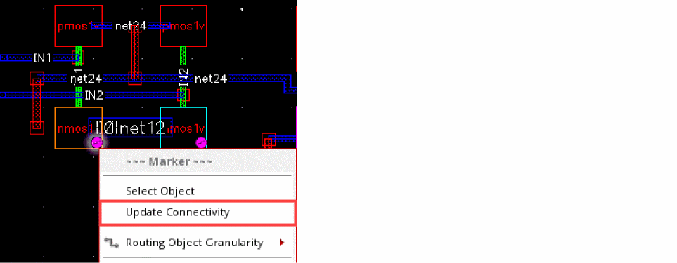

CAS TAB Marker Categories
The table below lists the various marker categories under which the schematic versus layout differences are reported in the CAS tab. The table also displays the icon that identifies each marker category, and the commands available in the shortcut menu to resolve each marker category.
| Marker Category | Icon | To resolve, choose... |
|
Update Selected Layout Parameters Update Selected Schematic Parameters Update All Schematic Parameters
When the allowSelectedParamUpdate environment variable is set to |
||
|
The Create Pins From Labels command allows creating any missing layout pins using the existing pin labels in the layout. |
||
|
A mismatch in min and max voltage values is reported using a Pin glyph, which also reports mismatches in pin direction, signal type, and power domain. |
||
Fixing CAS Mismatches
-
To interactively fix CAS mismatches, right-click the marker entry in the Annotation Browser CAS tab or the associated glyph in the layout canvas and choose the appropriate Update command from the shortcut menu:
- Update Connectivity to fix a glyph or marker that highlights connectivity mismatch issues.
- Update Layout Parameters to update the layout instance and resolve parameter mismatch issues.
- Update Schematic Parameters to update the schematic instance and resolve parameter mismatch issues.
- Update Master to update the instance master to match the physical binding in the physical configuration view.
- Update Physical Binding to update the physical binding to match the instance master in the layout view.
- Update Virtual Hierarchy to resolve mismatches between the virtual hierarchy in the layout and schematic views.
- Update Net Min/Max Voltage to fix a mismatch in minimum and maximum voltage values.
- Update Name to fix a mismatch between the schematic and the layout instance and net names.
Depending on the command you choose, the marker will be resolved, or you will be guided to the next appropriate form, command, or action.

Fixing CAS Tab Markers
To interactively fix the CAS tab markers:
-
Right-click a marker in the Annotation Browser or the layout canvas and choose the appropriate command that is available in the shortcut menu for the marker.
For example, if a marker represents an instance as Unbound, you can choose from the following commands in the shortcut menu to resolve the marker: Depending on the command you choose from the shortcut menu for the marker, the marker will either be resolved, or you will be guided to the next appropriate form, command, or action.
To simultaneously resolve multiple markers within a marker category, right-click the marker category and choose the appropriate command from the shortcut menu.
Changes in the Layout Window
If a device that is not in the schematic is present in the layout, it appears with a blinking marker in the layout canvas.
If a device parameter in the layout is different from the corresponding parameter in the schematic, a text window appears and lists the device names and properties (unless the device is ignored).
The command also reports shapes that are on redundant or unmatched nets which no longer exist in the schematic, but it does not put markers on these shapes in the layout canvas. You can check the shapes and delete them manually as required.
Related Topics
Return to top